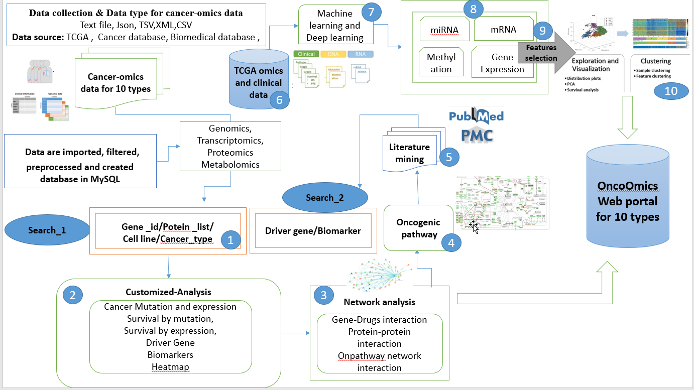
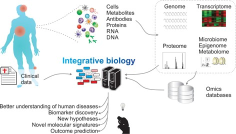

Go Back
Welcome to
OncoOmics is a cancer omics portal which incorporates somatic
mutation, RNA expression, miRNA expression, methylation, copy number
variation and clinical data in addition to annotation bases for 10
types of cancer. The OncoOmics portal is robust data-driven platform
that allows cancer researchers and bioinformaticians to search and
download cancer data for analysis. This portal also uses published
bioinformatics algorithms to identify driver genes and present them
with different molecular features; there are functions, with
respective to cancer and genes to help researchers visualize the
relationships between cancers, driver genes, gene-drug interaction,
protein -protein interaction and also their associated oncopathways.
Analysis results can be visualized by scatter plots, box plots, or
Kaplan-Meier plots. It provides four points of view, ‘Mutation’,
‘Gene’, ‘Pathway’, and ‘Cancer’, to help researchers to visualize the
relationships between cancers and driver variants.
"Omics"
-
Clinical Data : It inculdes attributes like age, overall survival,
phological stage (I, II, III, IV), TNM staging, Clinical subtype,
Molecular Subtype, number of lymph nodes, radiation therapy.
-
Copy Number (Level: Focal, Gene) : Normalized copy number (SNPs) ans
Copy number alterations for aggregated/segmented regions, per sample
-
miRNA (Leve: Gene, Isoform) : Normalized signals per probe or probe
set for each participant's tumor sample
-
Mutation (Level: Site, Gene) : Mutation calls for each participant
-
Methylation (Level: Gene) : Calculated beta values mapped to genome,
per sample
-
RNAseq (Level: Gene) : The normalized expression signal of
individual Gene (transcripts), per sample
-
RPPA (Level: Analyte, Gene) : Normalized protein expression for each
gene, per sample
-
Proteomics (Level: Gene) : Average log-ratio of sample reporter-ion
to common reference of peptide ions associated with the gene in
acquisitions from a specific biological Sample (Unshared Log
Ratio-Average log-ratio of sample reporter-ion to common reference
of peptide ions of unshared peptides only associated with the gene
in acquisitions from a specific biological sample).
-
Phospho-Proteomics (Level: Site) : Average log-ratio of sample
reporter-ion to common reference of peptide ions associated with
phosphorylated site combinations in acquisitions from a specific
biological sample (CDAP Protein Report).
-
Glyco-Proteomics (Level: Site) : Average log-ratio of sample
reporter-ion to common reference of peptide ions associated with
deglycosylated N-glycosylation site combinations in acquisitions
from a specific biological sample (CDAP Protein Report).
A general workflow of omics

